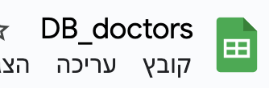

כעת, לאחר שהבנו מהו מסד נתונים ולמה הוא חשוב, הגיע הזמן להפשיל שרוולים ולהתנסות בעצמנו בבנייה של מסד נתונים קטן. לצורך כך, נשתמש ב-Google Sheets, גיליון אלקטרוני מקוון (בדומה ל־Excel) שזמין בחינם, פשוט לתפעול, ונוח מאוד ללימוד ועבודה ראשונית עם נתונים. Google Sheets הוא כלי נהדר ללימוד ראשוני ולעבודה בסיסית עם נתונים, על אף שאינו משמש כמסד נתונים מקצועי, ואינו תומך בכל היכולות המתקדמות שיש היום במסדי נתונים.
ניצור מסד נתונים קטן, שיכלול טבלה אחת בלבד, ובה מידע על 200 רופאות ורופאים העובדים בבית חולים דמיוני. הטבלה תכיל את השדות הבאים (כל שדה מהווה עמודה בטבלה):
עקבו אחר ההוראות הבאות לבניית מסד הנתונים:
היכנסו לקישור doctors_database – בקובץ תמצאו טבלה מוכנה הכוללת מידע דמיוני על רופאות ורופאים.
סמנו את כל הטבלה באמצעות הקשה על Ctrl+A או ⌘+A (במק). המידע אמור להיות מסומן בצבע כחול (כמו בתמונה). לאחר מכן, הקישו על Ctrl+C כדי להעתיק את התוכן.

גשו ל־Google Sheets וצרו גיליון ריק חדש (לחצו על סימן הפלוס).
ודאו שהסמן עומד על התא הראשון (A1), והקישו Ctrl+V כדי להדביק את הטבלה כולה.

לחצו על שם הגיליון (כעת הוא כנראה נקרא "גיליון ללא שם") ושנו אותו ל־DB_doctors.
עכשיו כשיש לכם את הטבלה – מתחילה ההרפתקה! תוכלו לשאול את הנתונים שאלות, למצוא דפוסים מעניינים, ולגלות כמה כוח יש למידע כשעובדים איתו נכון. ברוכים הבאים לעולם של מסדי נתונים – זה הרבה יותר מגיליונות וטבלאות!